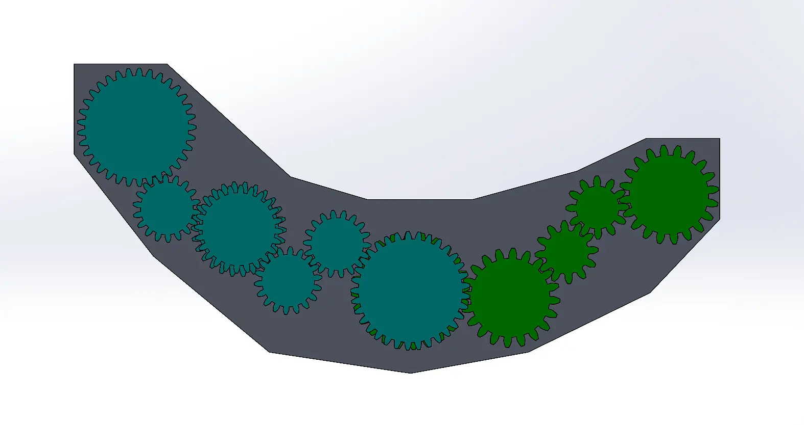
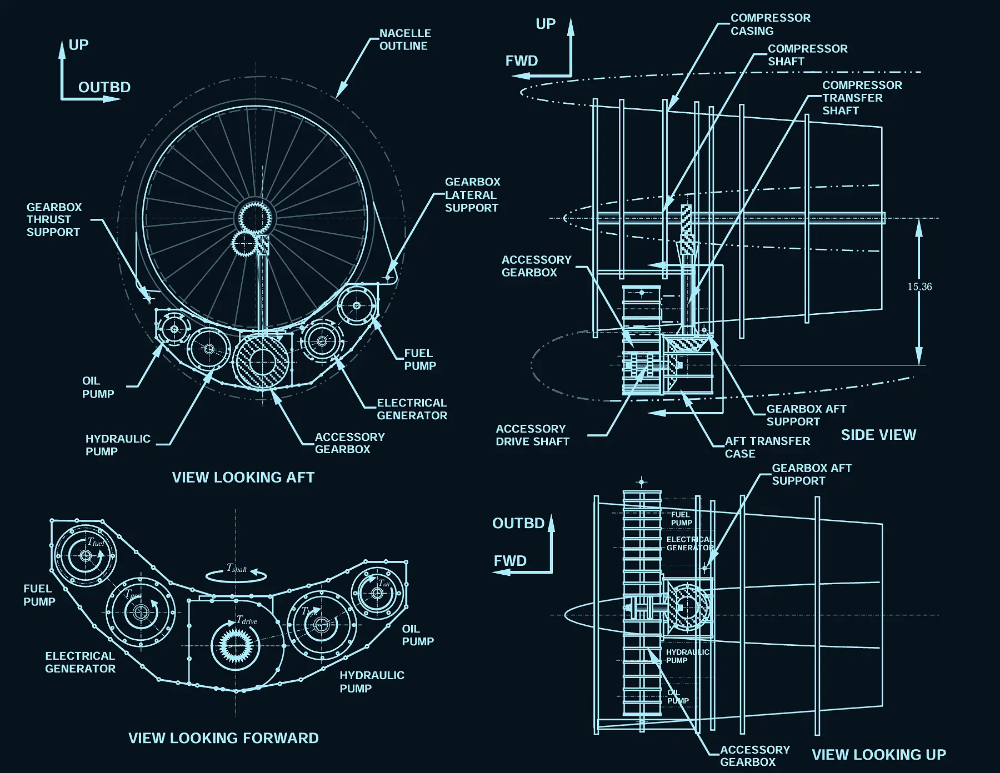
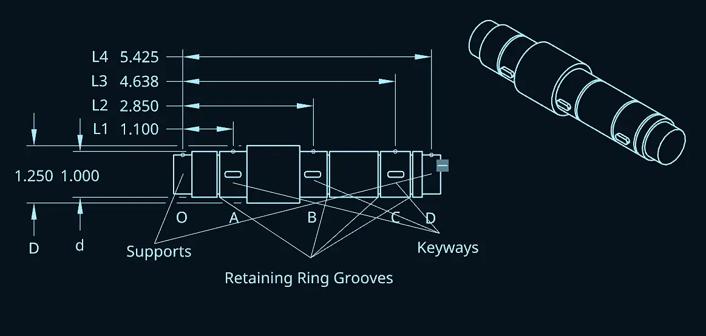
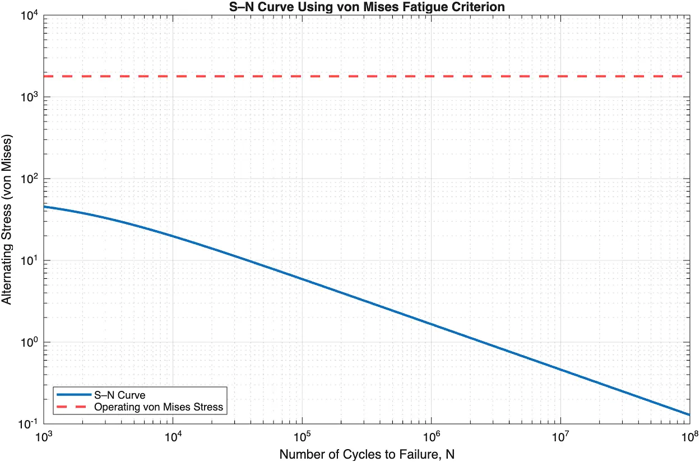

01The requirements
The gearbox is driven at 7,000 rpm off the engine's accessory drive shaft and has to deliver four accessory speeds within ±10 rpm, fit inside an existing housing, and weigh no more than 260 lbf fully assembled. Gears needed a factor of safety of at least 1.3 in bending and 1.15 in contact. Shafts and bearing supports had their own targets.
02The design
We aimed for the fewest, simplest parts that would still work, because every extra gear adds cost and weight. The final train uses 14 gears on 11 shafts: 12 spur gears and 2 bevel gears, two compound shafts, and keyways to locate everything. Gears are AISI 4140 quenched and tempered steel, and shafts are SAE 1006 hot-rolled. SolidWorks' parametric gear tools let us iterate tooth counts quickly until every ratio and center distance closed.
Fatigue analysis kept pointing at the same spot: the keyseat, where bending moment and stress concentration stack up. Pitting, not bending, ended up limiting the gears, which is common when hard steel gears are sized for strength.
03Gallery




Click any image to enlarge. Technical drawings are shown in an inverted blueprint style.